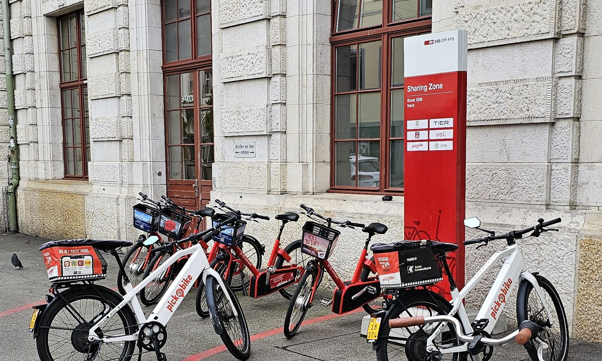
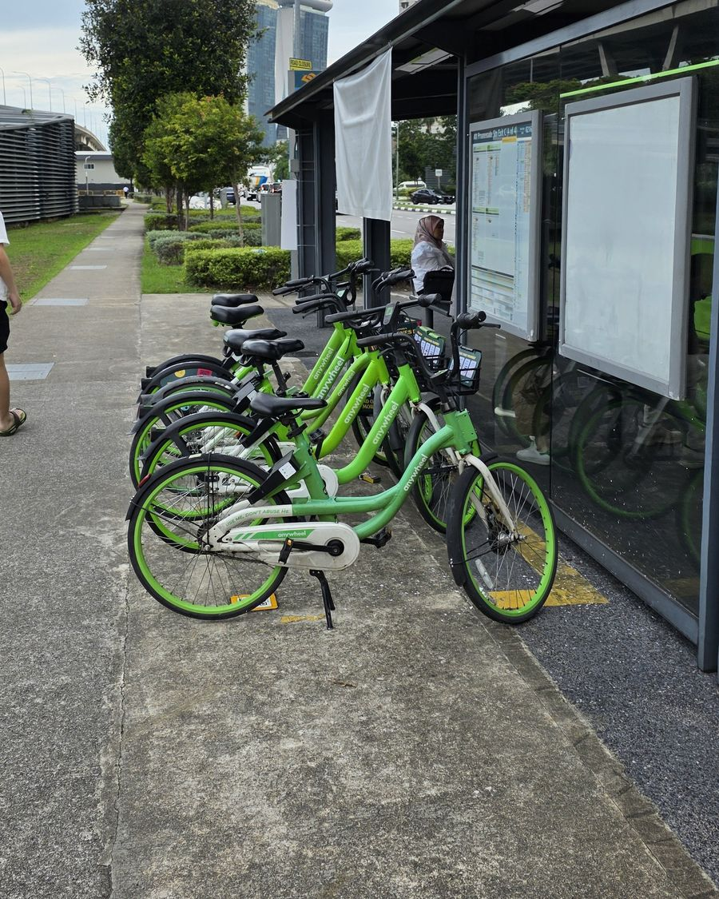
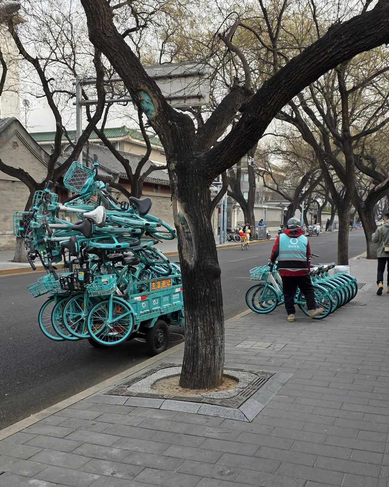
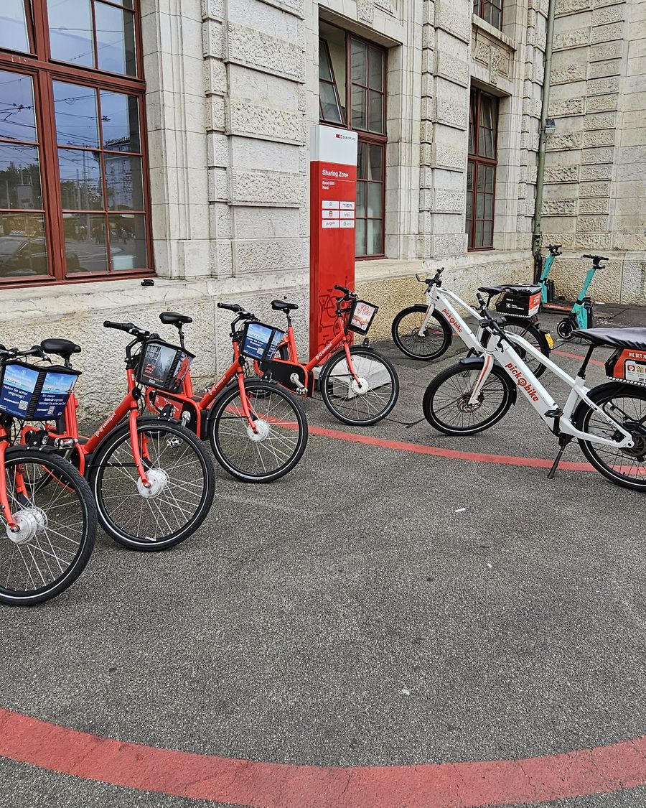
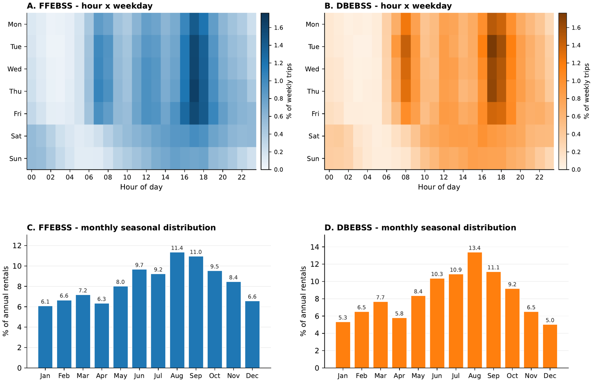
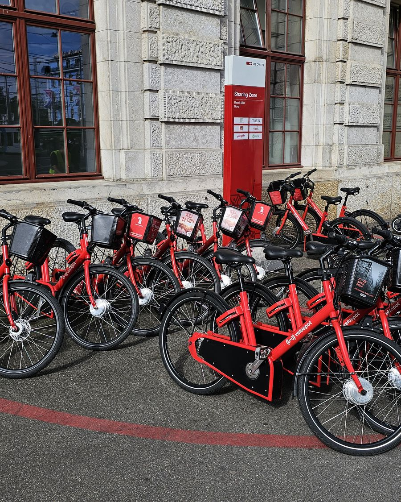
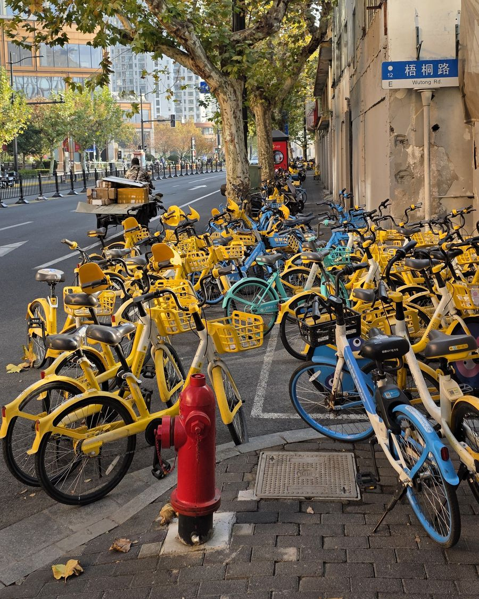
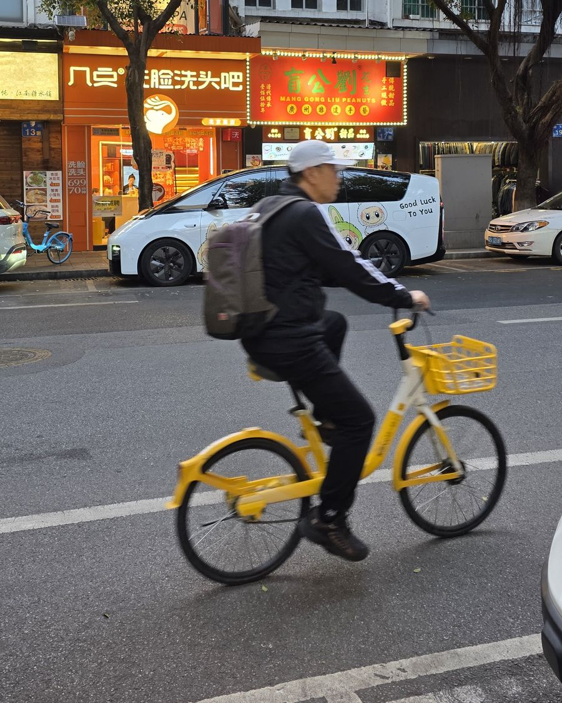

Transportation Research Part D, vol. 161, 2026, open access
A research project of the Lucerne University of Applied Sciences and Arts (HSLU) and the University of Basel, funded by the Swiss Federal Office of Energy
The potential of e-bike sharing for sustainable mobility
Two e-bike sharing systems operate side by side in Basel: the free-floating Pick-e-Bike with S-pedelecs and the dock-based PubliBike Velospot with pedelecs. We linked about 1.4 million rentals with a survey of 1,844 registered users to find out who uses these services intensively, and why.
- Duration
- December 2023 to January 2027
- Funding
- Swiss Federal Office of Energy (SFOE), grant SI/502720-01
- Institutions
- HSLU Institute of Tourism and Mobility; University of Basel, Faculty of Business and Economics
- Data partners
- Pick-e-Bike and PubliBike Velospot

Published results
Journal of Urban Mobility, vol. 10, 2026, open access
Contrasting usage and spatial profiles of free-floating S-pedelec and dock-based pedelec sharing in Basel
Key findings
Practical benefit explains intensive use better than environmental attitudes. Results of the first article, based on 1,743 survey respondents linked to their rental histories.
-
A small group of users generates most trips
A Gaussian mixture model on rentals per month divides users into three segments: low (48%, 0.20 rentals a month), medium (39%, 1.60) and high intensity (13%, 12.71). The top 20% of users account for 80.3% of trips (Gini 0.77). Use is more concentrated in the dock-based system (Gini 0.83 vs 0.75), where high-intensity users are 2.4 times as common (23.5% vs 9.6%).
-
Environmental identity does not lead to more use
Users with a stronger pro-environmental self-identity are less likely to be in a higher-intensity segment (OR 0.82, p = 0.01). One plausible reason: in Basel, people with strong environmental attitudes already walk, cycle or take the tram, so a shared e-bike adds little for them.
-
Combining with public transport is the strongest driver
Using e-bike sharing together with public transport or walking, or as a fallback, raises the odds of higher-intensity use the most (OR 1.53, p < 0.001). Doubts about availability and cost are the strongest brake (OR 0.61, p < 0.001).
-
The two systems have different frequent riders
In the dock-based system, frequent riders are mostly highly educated and live in the urban core. They ride fixed commuting routes on which the bike is faster than the tram (perceived advantage over public transport: OR 1.53). In the free-floating system, frequent riders are younger than occasional users and less often own a car (48% vs 69%). They combine the service with other modes (OR 1.74). In the article we call them routine optimizers and flexibility maximizers.
-
Shared e-bikes mostly replace public transport and walking
75.5% of users at least sometimes replace a public transport trip, 50.9% a walk. Of users with access to a car, 33.9% sometimes replace a car trip (free-floating 36.4%, dock-based 22.0%). E-bike sharing mainly relieves and extends public transport. It is not primarily a car substitute.
Open question: does sharing lead to buying an e-bike?
Owning a private e-bike goes with less shared use (OR 0.73, p < 0.01). About half of the 629 owners and prospective buyers say that e-bike sharing contributed to their decision, more often among high-intensity users (63% vs 46%). With cross-sectional data we cannot tell whether sharing causes the purchase.
Low: 0.20 rentals/month
Medium: 1.60
High: 12.71
What predicts usage intensity
Odds ratios from the ordered logit model (N = 1,743, McFadden pseudo-R² = 0.104). Values above 1 raise the odds of belonging to a higher-intensity segment, values below 1 lower them.
Attitudes and perceptions
Mobility tools
Demographics
Place of residence
Reading the model
Combining e-bike sharing with other modes is the strongest positive predictor, concerns about reliability and cost the strongest negative one. Environmental self-identity is negative: a stronger green identity goes with about 18% lower odds of a higher-intensity segment.
A Brant test rejects proportional odds overall, mainly because of control variables (half-fare travelcard, place of residence, income). Among the attitudinal factors only environmental self-identity deviates: its negative association is concentrated at the threshold to high intensity (OR 0.68 vs 0.90 at the medium threshold). A multinomial logit in the appendix of the article gives the same ranking of predictors.
| Factor | Free-floating | Dock-based |
|---|---|---|
| Combination with other modes (F5) | 1.74 *** | 1.13 n.s. |
| Advantage over public transport (F4) | 1.08 n.s. | 1.53 ** |
| Environmental self-identity (F7) | 0.87 | 0.77 |
*** p < 0.001, ** p < 0.01, n.s. not significant. Environmental self-identity is below 1 in both systems.
Implications for practice
E-bike sharing is a useful but limited part of the transport system. The results suggest investing in what keeps frequent riders riding.
Integrate with public transport
This is the strongest lever: combined fares or subscriptions, availability shown in journey planners such as the SBB app, and stations or parking zones at transfer points.
Make availability reliable
Doubts about availability and cost hold frequent riders back more than anything else. Fleet size, rebalancing, real-time information and short reservations (for example 15 minutes) address exactly these doubts.
Promote practical benefits
Frequent riders are not the most environmentally minded users. Time savings and good connections to public transport are the stronger arguments.
Measure the right benefits
Most replaced trips were already made by public transport or on foot, so CO₂ savings are a weak yardstick. Relief for crowded public transport at peak times, last-mile connections and the fallback role during disruptions matter more.



Fare integration is now being tested in the Basel region. In the U-Two field test, FHNW, HSLU, BVB, BLT and TNW integrate shared bikes and e-bikes into the U-Abo and the GA travelcard. The test runs through 2026.
Comparing the two systems
The second article compares both systems over their full operating history (May 2018 to March 2025, 1.47 million trips, no survey data). Docking, vehicle type, speed, service area and fares all differ at once, so each system is treated as a package and no single design feature explains a difference.
Usage
The free-floating system has a broad, mostly occasional user base: 26,744 active users, median trip 2.05 km, Gini 0.72. The dock-based system has fewer but more frequent users: 6,519 users, median trip 1.44 km, Gini 0.80. 93% of its activity is in Basel-Stadt, and its users are younger and more gender-balanced.
Space
Free-floating trips follow where people live and thin out with distance from the centre. Dock-based trips follow where people work. With time window and area matched, the ratio of trip distances falls from 1.49 to 1.19, so the gap is partly a matter of coverage.
Weather
Rain reduces the free-floating morning peak the most (IRR 0.67 per mm), while temperature hardly matters there. Dock-based demand follows temperature throughout the day.
Scale
Together, both systems amount to about 0.24% of BVB boardings. Free-floating trips increasingly start in areas with medium public transport quality (classes B and C, from 34% to 42%). Dock-based trips stay concentrated around the main hubs (class A, about 80%).

| Indicator | Free-floating | Dock-based |
|---|---|---|
| Annual rentals | 203,738 | 107,156 |
| Active users | 12,658 | 3,778 |
| Trips per active user | 16.1 | 28.4 |
| Mean trip distance (km) | 2.62 | 1.57 |
| Mean trip duration (min) | 17.3 | 11.4 |
| Gini, trips per user | 0.72 | 0.80 |
| Median user age (years) | 39.1 | 33.0 |
| Trips per active vehicle-day | 2.30 | 1.84 |
| Median fleet idle time (min) | 384 | 613 |
What this means for planning
The two systems serve different purposes and should not be judged by one benchmark. A single benchmark undervalues either the regional reach of the free-floating system or the intensive use of the dock-based one. Their small volume relative to public transport makes large-scale substitution unlikely. Whether they complement public transport cannot be answered from operational data alone, as these contain no trip purposes.
Source: Stiebe, von Arx and Sager-Müller (2026), Journal of Urban Mobility 10, 100288, open access. Based on all operational records, so the figures are not directly comparable with the survey sample of the first article.
Data explorer
Four views of the operational data: service areas, one week of routed trips, where trips start and end, and how unevenly use is distributed across users.
Basel is a demanding test case: it has the highest public transport share in Switzerland (32.5% of trips), a cycling share of 11.7% and the lowest car ownership among the large Swiss cities (319 cars per 1,000 inhabitants). Both systems have operated side by side since September 2021. The map shows the municipalities served by each system and their overlap; PubliBike Velospot stations can be added as a layer. Dashed outlines mark the Pick-e-Bike pilot in Lausen, Itingen, Sissach and Gelterkinden (June to November 2026, one station each).
1,800 rentals from 26 August to 1 September 2024 (900 per system), routed along the street network. The animation shows short trips in the centre, the commuting peaks and longer trips between suburbs.
View
System
33 min/s
Mo 00:00
Pick-e-Bike, 900 trips
PubliBike Velospot, 900 trips
Routing: OSRM, bicycle profile
Trip starts and ends on a 200 m grid. Colour shows the number of trips on a log scale, capped at the 99th percentile so that differences outside the centre remain visible.
Show
System
Time
Loading trip data…
fewer trips
more trips
Each curve shows the cumulative share of trips (or minutes ridden) against the cumulative share of users. The diagonal would mean that all users ride equally often. With a Gini coefficient of 0.77, a small minority of users generates most trips, while the typical registered user rides rarely. Hover over the curves for exact values.
Trips, all users
Cumulative share of trips by user percentile
Minutes ridden, all users
Cumulative share of minutes by user percentile
Trips, survey respondents
Linked subsample (N = 1,743)
Minutes ridden, survey respondents
Linked subsample (N = 1,743)
Publications and presentations
Journal articles
- Stiebe, M., Krysiak, F. C., von Arx, W., & Weggelaar, B. (2026). Pragmatism, not ideology: drivers of e-bike sharing usage intensity. Transportation Research Part D: Transport and Environment, 161, 105621. doi.org/10.1016/j.trd.2026.105621 (open access, CC BY 4.0)
- Stiebe, M., von Arx, W., & Sager-Müller, S. (2026). Contrasting usage and spatial profiles of free-floating S-pedelec and dock-based pedelec sharing in Basel: A longitudinal system-level comparison. Journal of Urban Mobility, 10, 100288. doi.org/10.1016/j.urbmob.2026.100288 (open access)
Conference papers and talks
- Stiebe, M., & Weggelaar, B. (2026). Drivers of e-bike sharing usage intensity: evidence from free-floating and dock-based systems in Basel. Talk, Sustainable Future Research Lunch, University of Basel, 20 March 2026.
- Stiebe, M. (2025). Pragmatists, not idealists: what drives e-bike sharing usage intensity and why car substitution remains elusive. Talk, Economics Lunch Seminar, Faculty of Business and Economics (WWZ), University of Basel, 17 December 2025.
- Stiebe, M., & von Arx, W. (2025). Understanding user behavior in dock-based and free-floating e-bike sharing systems: a multi-method study from the Basel metropolitan area. mobil.TUM 2025, 14th International Scientific Conference on Mobility and Transport, Nanyang Technological University, Singapore, 24 to 26 November 2025.
- Stiebe, M., & von Arx, W. (2024). Comparative analysis of user characteristics and use patterns in free-floating and station-based e-bike sharing systems: empirical insights from the Basel metropolitan area. European Transport Conference 2024, Antwerp, 17 to 20 September 2024. aetransport.org
- Stiebe, M., & von Arx, W. (2024). Comparative analysis of user characteristics and use patterns in free-floating and station-based e-bike sharing systems: insights from the Basel metropolitan area. Swiss Transport Research Conference 2024, Ascona, 15 to 17 May 2024. PDF
- von Arx, W., & Stiebe, M. (2024). Obstacles to economic sustainability of free-floating e-bike sharing systems: a Basel-based case study. Talk, Swiss Transport Research Conference 2024, Ascona, 15 May 2024.
Media
- «E-Bike-Sharing boomt in der Schweiz!» News article, Lucerne University of Applied Sciences and Arts, 13 November 2024. hslu.ch
Related links
- POTEBS in the SFOE project database ARAMIS
- U-Two field test on fare integrationu-two.ch
- Pick-e-Bikepickebike.ch
- PubliBike Velospotvelospot.info
- Bike Share Map, Baselbikesharemap.com
- SFOE energy researchbfe.admin.ch
About the project
How can e-bike sharing support the mobility transition as part of a flexible, multimodal transport system?
- Which user groups use e-bike sharing, and in which multimodal contexts? What hinders use, and which benefits do users report?
- Which business models for e-bike sharing, alone or combined with public transport, could build on these user needs?
- How can e-bike sharing contribute to sustainable mobility in urban and peri-urban regions, and which measures support this?
Background
Studies of bike sharing consistently find that 10 to 22% of registered users generate 50 to 81% of trips, and about half never return after signing up. Operating costs often exceed revenues. Whether a system can sustain itself therefore depends on a small group of frequent riders.
Earlier research explains who signs up and what drives total demand, but not which personal characteristics turn a registered user into a frequent rider, or how this depends on the design of the system. POTEBS addresses this by linking about 1.4 million trip records to individual survey responses from two systems operating side by side. Data, survey and models are described on the methods page.



Timeline
2023
Dec
Project start
Funded by the SFOE. Trip data from Pick-e-Bike and PubliBike Velospot form the empirical basis.
2024
May
STRC 2024, Ascona
First comparison of user characteristics in the free-floating and the station-based system.
Sep
ETC 2024, Antwerp
Updated comparison at the European Transport Conference.
2025
Jan
First advisory board meeting
With transport authorities, operators and policy institutions.
Apr
User surveys
Parallel surveys of registered users of both systems: 1,844 valid responses, 1,743 linked to trip histories.
May
Non-user survey
Travel behaviour and barriers among non-users in the TNW fare network.
Nov
mobil.TUM 2025, Singapore
User behaviour in the dock-based and the free-floating system.
Dec
WWZ Economics Lunch Seminar, Basel
What drives e-bike sharing usage intensity.
2026
Mar
Submission to Transportation Research Part D
Article on the drivers of usage intensity.
Jun
Second advisory board meeting
Survey results, models and policy implications.
Sep
Article in Transportation Research Part D
Volume 161, 105621, open access.
Sep
Article in the Journal of Urban Mobility
Volume 10, 100288, open access.
Q4
Final report to the SFOE
Findings, methods and policy implications of the whole project.
2027
Jan
Project end
Final advisory board meeting, archiving of the anonymised data sets and handover to partners, including the U-Two project.
Partners and advisory board

Funding
Swiss Federal Office of Energy, Energy Research and Cleantech programme, grant SI/502720-01 (ARAMIS)

Lead institution
Institute of Tourism and Mobility, Competence Center Mobility

Research partner
Faculty of Business and Economics (WWZ), Environmental Economics

Implementation partner
Free-floating S-pedelec sharing. Trip data and survey distribution.

Implementation partner
Dock-based pedelec sharing. Trip data and survey distribution.
Sister project
FHNW field test on fare integration of shared bikes with HSLU, BVB, BLT and TNW, 2026
Advisory board
- WWZ, University of Basel (research)
- Office of Mobility, Canton of Basel-Stadt
- Basler Verkehrs-Betriebe (BVB)
- Tarifverbund Nordwestschweiz (TNW)
- Swiss Federal Railways (SBB)
- Federal Roads Office (FEDRO)
- Pro Velo beider Basel
Team

Dr. Michael Stiebe
Project manager, HSLU
LecturerInstitute of Tourism and Mobility (ITM), Competence Center Mobility
Lucerne School of Business
Walter-von-Moos-Promenade 1, 2nd floor
6005 Lucerne
+41 41 349 36 24
michael.stiebe@hslu.ch
HSLU profile

Prof. Dr. Widar von Arx
Co-project manager, HSLU
Professor, Head of the Competence Center MobilityInstitute of Tourism and Mobility (ITM)
Lucerne School of Business
Walter-von-Moos-Promenade 1, 2nd floor
6005 Lucerne
+41 41 228 42 88
HSLU profile

Prof. Dr. Frank C. Krysiak
Co-project manager, University of Basel
Environmental Economics, WWZRoom 4.51
Peter Merian-Weg 6, Postfach
4002 Basel
+41 61 207 33 60
frank.krysiak@unibas.ch
University profile

Benjamin Weggelaar
Research associate, University of Basel, since October 2024
PhD candidate, Environmental Economics, WWZRoom 4.47
Peter Merian-Weg 6
4052 Basel
+41 61 207 24 56
benjamin.weggelaar@unibas.ch
University profile